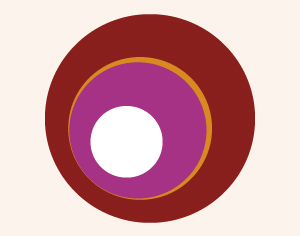

Sosiale medier og nettvett med Siren Høyland
- Dato:
- 01.10.2012 til 01.10.2012
- Start kl :
- 18:00
- Slutt kl :
- 21:00
- Adresse:
- Norsk Skuespillersenter, Welhavensgate 1, Oslo
Sosiale medier er etter hvert blitt en viktig – om ikke den viktigste – markedsføringskanalen for scenekunstnere med egne prosjekter. Men hvordan blir man synlig med sitt prosjekt blant mylderet av informasjon på nettet? Hva slags innhold bør Facebookoppdateringene dine ha? Og hvordan får man lesere til bloggen sin, og må man oppdatere den hver dag?
{kind=link}
Det er også mange feller å gå i. For hvor går grensen mellom det private og offentlige? Og hvor mye kan man tvitre før det oppfattes som mas?
I dette seminaret får du både tips om det praktiske rundt bruken av sosiale medier, så vel som informasjon om nettikette og nettvett. Du vil også få innføring i hvilke kanaler det er verdt å bruke tiden på, praktiske tips som gjør maksimerer din netthverdag samt at du får vite litt om hvordan du kan overvåke hva som skrives om deg på nett og effekten av hva du gjør. I dette seminaret lærer vi mye av å se på andre, og du vil få presentert reelle eksempler fra norske teatres og andre scenekunstneres nettaktiviteter slik at vi kan inspireres og lære av hva andre gjør bra – og dårlig.
Velkommen til et foredrag som er lettfattelig, fullt av praktiske råd og tips, uformelt og med mulighet for å stille spørsmål.
Siren Høyland (31) har vært opptatt av brukergenerert innhold på internett siden dets spede begynnelse på 90-tallet, og er utdannet i markedsføring fra University of Northumbria i England. Hun har jobbet i VG med å lage største norske nettsamfunn noensinne, Nettby, - i pre-facebook tid, og jobber nå i kommunikasjonsavdelingen på Det Norske Teatret med digitale og sosiale medier.
Seminaret arrangeres i samarbeid mellom Norsk Skuespillersenter, Norske Dansekunstere og Musikkteaterforum